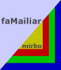

 cs.tamu.edu, mirkokrug
cs.tamu.edu, mirkokrug
I am passionate about designing and developing interactive experiences/artifacts/software that enable humans to effectively and pleasantly participate in the information age today, and the new age that is to come. Our daily interactions with computers result in a constant accumulation of large volumes of data. I believe how these data are represented and interpreted is crucial for understanding our role in this age, our personal histories and our interpersonal relationships. My interests include:
- Information Visualization, Computational Semiotics
- Information-based Intimate and Affective Computing
- Human-Information Interaction, Human-Computer Interaction
- Design, Usability
- Computer Graphics, Multimedia
As a part of my thesis research at interface ecology lab, I designed and implemented a novel, intimacy-based email visualization interface, faMailiar. Traditional email interfaces have gone through very few transformations since their inception. As email data amasses in users' email boxes, these interfaces fail to provide effective message handling and browsing support. Saved email messages provide not only a vast and pulsating record of one's electronic past, but also a potential source of valuable insights into the structure and dynamics of one's social network.
Our visualization approach to email draws upon email’s inherently personal character and uses intimacy as a key parameter. We computationally define intimacy in email domain as a combination of the following two metrics:
- contact intimacy category - a user-defined parameter that describes how intimate the user feels with her email contacts.
- message intimacy weight - a derived parameter, based on message data. Each message is procedurally assigned an intimacy weight rating, as a result of information retrieval analysis of the presence of "intimate" and "anti-intimate" keywords. Forwarded messages and those having more than one recipient are assigned decreasing intimacy weight.
We pursued a multi-dimensional definition of intimacy, one that is consistent with traditional psychology, and developed an experience framework that enables the user to define, quantify, see, filter and understand intimacy of her relationships over time. faMailiar visualizes email in a chronological manner through two alternative, calendar-like views (daily and weekly) that present email activity on different time granularity scales. Visual mappings of email data and support for filtering help the user see rhythms and patterns in her social interactions. Zooming, panning and implicit semantic zooming facilitate navigation across large email collections.
According to the results of our ecological user study, faMailiar enables the users to experience their email collections and their pasts in new, meaningful ways. Comments, such as “I could see that in past four years I lost many of my personal relationships in favor of school,” illustrate that the participants were gaining striking insights into their lives. The study revealed faMailiar’s potential to improve users’ lives and their overall well-being by enabling them to recognize a personal need to improve intimate relationships.